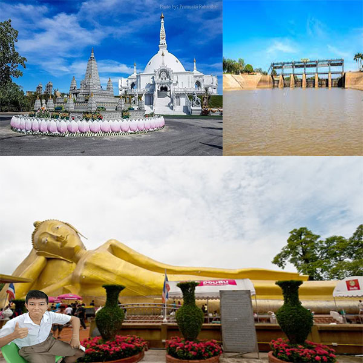

สถานที่ท่องเที่ยว
อำเภอท่าเรือมีสถานที่ท่องเที่ยวที่น่าสนใจและเป็นที่ดึงดูดนักท่องเที่ยวได้แก่
1.เขื่อนพระราม 6 เป็นเขื่อนทดน้ำเพื่อการเกษตรแห่งแรกของประเทศไทย
2.วัดสะตือ พุทธไสยาสน์ ซึ่งเป็นสถานที่สมเด็จพุฒาจารย์ (โต) พรหมรังสี เกิดในเรือซึ่งอยู่บริเวณใกล้เคียงกับวัดแห่งนี้ จึงได้มีการอัญเชิญพระพุทธรูปของสมเด็จพุฒาจารย์ (โต) พรหมรังสี ประดิษฐานปางไสยาสน์อยู่ในวัดแห่งนี้
3.วัดบึงลัฏฐิวัล เป็นวัดสายปฏิบัติธรรม มีพระธาตุเจดีย์ศรีอยุธยาสัมมาสัมโพธิญาณ และมีบรรยากาศร่มรื่นเหมาะแก่การปฏิบัติธรรม
4.วัดหนองแห้ว วัดตั้งอยู่ในเขตเทศบาลตำบลท่าเรือมีพระองค์ใหญ่ไม่มีการตั้งชื่ออย่างเป็นทางการ โดยชาวบ้านเรียกว่า'หลวงพ่อใหญ่'ตั้งอยู่ในบริเวณวัดเป็นที่เคารพและนับถือของชาวบ้าน
5.วัดไม้รวก วัดนี้สร้างตั้งแต่สมัยรัชกาลที่ 3 มีภาพจิตรกรรมฝาผนังโบราณ มีพระพุทธรูปปางป่าเลไลย์และพระพุทธรูปปางไสยาสน์จำลองประดิษฐานอยู่ภายในวัด
6.วัดศาลาลอย ตั้งอยู่ในตำบลศาลาลอย เดิมมีชื่อว่าวัดศิลาลอยเนื่องจากมีศิลาลอยน้ำมาชาวบ้านจึงช่วยกันอันเชิญศิลาขึ้นมาแต่ไม่สำเร็จ ปัจจุบันศิลานั้นประดิษฐานอยู่ที่วัดเทพจันทร์ลอย อำเภอนครหลวง สิ่งที่น่าสนใจของวัดนี้คือพระองค์ใหญ่ที่ประดิษฐานในวิหาร
7.วัดไก่จ้น เป็นถิ่นกำเนิดสมเด็จพระพุฒาจารย์มีรูปปั้นจำลงอสมเด็จพระพุฒาจารย์ (โต พรหมรังสี) และพระพุทธรูปปางป่าเลไลย์ ประดิษฐานในวิหาร